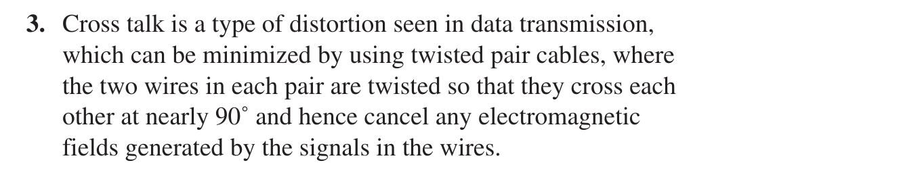

Tooley: Ch.14 EMC (p.218-237): 14.1 harmonics and pulse spectrum, 14.2 EMC and avionic equipment, 14.3 spectrum analysis (noise floor, Table 14.1 bands), 14.4 effects, sources and reduction of EMI, 14.5 wiring, 14.6 grounding and bonding; 9 MCQs (A.14, p.381)
Floyd: Floyd has NO EMC chapter. Only partial matches: Ch.13 section 13-1 (cross talk, UTP/STP twisted pairs against EMI, p.741), Ch.6 section 6-11 (VCC-to-ground decoupling, p.364), Ch.15 section 15-3 (noise margin, p.859; Problem 3 p.887). Most of the module relies on Tooley and the lecture.
The 46-slide lecture (each slide read) has 3 dB exercise sets (slides 17, 19, 21); all were re-solved and the 10 kW versus 100 kW error on slide 21 was caught. The module has 3 interactive demos (dB and dBm, square-wave Fourier, a real capacitor) and records the mismatches found in the material.
An aircraft packs hundreds of electronic units close together, under lightning, radar and radio transmitters. EMC is their ability to keep working correctly in that same electromagnetic environment. This module goes from the definition and sources of interference, through signals, spectra and the dB unit, to the test standards (CISPR, IEC 61000, DO-160) and the EMI reduction measures: filtering, ferrites, decoupling capacitors, wiring, grounding and bonding, with three live demos on the page.
EMC: equipment functioning acceptably in its electromagnetic environment by limiting unintentional generation, propagation and reception of electromagnetic energy
A real case: Wi-Fi interfering with Honeywell displays on the Boeing 757, hence the placard banning Wi-Fi on the flight deck
Sources: lightning, radar, radio communication, electric motors, digital circuits and switching supplies
Three factors cause EMI: a noise source, a coupling path (conducted or radiated) and a susceptible receiver
PART 1/5 · 09
Opening case: Wi-Fi and the Boeing 757 cockpit displays
The aircraft Wi-Fi system transmits at 2.4 or 5 GHz. Some of the emissions (intended or not) can couple into the wiring or electronics of the Honeywell Phase 3 displays (PFD, ND) in the Boeing 757 cockpit and cause display anomalies. Hence the cockpit placard banning Wi-Fi devices while the engines run for the purpose of flight.
Click the image to enlarge📖 Explained for complete beginners
The chain has all three EMI factors: source (the Wi-Fi transmitter), coupling path (wiring or radiation into the unit) and susceptible receiver (the display). The placard is a "reduce the source" measure by procedure.
PART 1/5 · 09
Definition of EMC
Electromagnetic compatibility (EMC) is the ability of electrical equipment and systems to function acceptably in their electromagnetic environment by limiting the unintentional generation, propagation and reception of electromagnetic energy that may cause unwanted effects such as electromagnetic interference (EMI) or even physical damage. The goal: different equipment working correctly in a common electromagnetic environment.
Click the image to enlarge📖 Explained for complete beginners
The three verbs map to three links: generating sources (motors, radio transmitters, switching devices), the propagation environment, sensitive receiving equipment (avionics, LRUs). Tooley 14.4: EMI is the presence of unwanted voltages or currents that adversely affect an avionic system; a system whose susceptibility threshold exceeds the interference level is electromagnetically compatible.
PART 1/5 · 09
The electromagnetic environment of an aircraft
External sources: lightning and weather, ground radar, VHF/UHF and navigation radio stations (VOR, DME, ILS), other aircraft (TCAS), solar and cosmic radiation. Internal sources: generators, motors, converters, avionics and switching devices. Four steps of the energy: unintentional generation, propagation, reflection/scattering, reception (through the aircraft's antennas and wiring).
Click the image to enlarge📖 Explained for complete beginners
Easily forgotten: wiring acts as a receiving antenna, so long harnesses are the main coupling path (slide 6). Reflections and multipath make the real field differ from an ideal calculation.
PART 1/5 · 09
Strength of electromagnetic sources
Source
Field strength (slide)
Lightning
100 kV/m at 1 m
Radar
100 kV/m at 1 m
Radio communication
1000 V/m at 1 m
Electric motor
50 V/m at 10 cm
Electronic circuit
5 V/m at 10 cm
Bands: VLF 3 to 30 kHz, LF 30 to 300 kHz, MF 300 kHz to 3 MHz, HF 3 to 30 MHz, VHF 30 to 300 MHz, UHF 300 MHz to 3 GHz, SHF 3 to 30 GHz.
Click the image to enlarge📖 Explained for complete beginners
The distance in each row matters: 50 V/m at 10 cm and 1000 V/m at 1 m refer to different distances. The bands match Tooley Table 14.1 (ELF 300 Hz to 3 kHz, VLF 3 to 30 kHz, …, SHF 3 to 30 GHz). Remember: the higher the frequency, the shorter the wavelength, and even short wires become effective antennas.
PART 1/5 · 09
Sources and effects of EMI (Tooley 14.4)
Sources: fluorescent lights, radio and radar transmitters, power lines, window heat controllers, induction motors, switching and light-dimming circuits, microprocessors and associated circuitry, pulsed high-frequency circuits, bus cables (but not fibre-optic cables), static discharge and lightning.
Effects: errors in instrument indications (above and below true), heterodyne whistles on audio, herringbone patterns on video displays, buzz on intercom and cabin phones, desensitised radio and radar receivers, false indications on radar and DME, unwarranted alarms.
📖 Explained for complete beginners
Two transmission processes: conduction (through electrically conductive paths such as circuit wiring and metallic structure) and radiation (through non-conductive media such as air, plastic, fibreglass). Chapter 14 quiz question 2: EMI is conveyed from source to receiver by both conduction and radiation. The susceptibility threshold is the minimum interference level that changes the equipment's performance.
PART 2/5
02
Signals, spectra and the spectrum analyser
Every signal must be considered in both the time domain and the frequency domain
A rectangular pulse = fundamental + odd harmonics of amplitude V/n; sharp edges mean much high-frequency content
A spectrum analyser plots amplitude against frequency, and its noise floor limits sensitivity
Lightning, ESD, HEMP, digital-circuit EMI and radio signals have very different spectra
PART 2/5 · 09
Signal types in EMC
All waveforms must be considered: low and high frequency, periodic and non-periodic, sinusoidal and modulated (AM, FM), narrowband (one frequency: VHF, VOR/ILS) and broadband (pulses, noise: switching supplies, fast-edge digital circuits, lightning pulses).
Time domain (oscilloscope): amplitude, period, rise and fall time. Frequency domain (spectrum analyser): frequency content, narrowband or broadband, level versus frequency.
Click the image to enlarge📖 Explained for complete beginners
Tooley 14.4.2 classifies EMI by bandwidth, amplitude, waveform and occurrence. Narrowband: AC power rails, microprocessor clocks and their harmonics, radio transmitters and receivers. Broadband: power supplies, LCD and AMLCD (high-frequency AC supplies), microprocessor buses. By occurrence: periodic, aperiodic (predictable but not continuous) or random. Quiz question 1: aperiodic noise is regular but not continuous (the book's printed answer is (a)).
PART 2/5 · 09
Spectrum of a rectangular pulse: a sum of odd harmonics
Every complex wave comprises a fundamental plus many harmonics, each with its own amplitude and phase (Fourier analysis). Square wave: v = V[sin ωt + (1/3) sin 3ωt + (1/5) sin 5ωt + (1/7) sin 7ωt + …], only odd harmonics (f, 3f, 5f, 7f, …) with amplitude V/n; the spectral envelope is proportional to 1/n. Try Demo 2 at the bottom of the page.
Click the image to enlarge📖 Explained for complete beginners
Tooley TYU 14.1 (50 V, 2 kHz square wave): the fifth harmonic has amplitude 50/5 = 10 V and frequency 5 × 2 kHz = 10 kHz. EMC meaning: the faster a digital pulse edge, the more high harmonics, and short wires radiate well at high frequency, hence "keep pulse rise times as slow and long as possible" (slide 38). On the normalisation of V see the module's warning box.
PART 2/5 · 09
Signals in the aircraft electromagnetic environment
Source
Characteristics
Lightning
Low frequency (kHz), very high amplitude (peak 10 to 200 kA), µs to ms long
ESD
Broadband (MHz to GHz), rise time about 1 ns, kV, short (few ns to 100 ns)
Digital-circuit EMI
Periodic and non-periodic, generates wideband harmonics, lower amplitude
HEMP
Very fast, wide frequency content (MHz to GHz), high field strength, short
Click the image to enlarge📖 Explained for complete beginners
The takeaway: there is no single "noise" waveform. Tooley 14.4.2: it is the change from one signal level to another together with the rate of change that determines the electromagnetic energy released; larger and faster changes release more. Quiz question 9: noise from a switching circuit is worst when switching is fast and current is high.
PART 2/5 · 09
The spectrum analyser
A spectrum analyser measures the frequency spectrum of an electrical signal and is one of the most important devices for EMC measurements. Block diagram (lecture): attenuator → mixer → intermediate-frequency (IF) amplifier → resolution bandwidth filter RBW → detector → video bandwidth filter VBW → display; the local oscillator LO sweeps from f_start to f_stop in sync with the display.
Click the image to enlarge📖 Explained for complete beginners
Quiz question 3: a spectrum analyser display shows amplitude plotted against frequency. Tooley (Figure 14.6) describes a specific instrument: up to 50 dB attenuation or 10 dB gain, mixed with a 1.5 to 2.5 GHz LO to give a 1.5 GHz IF, then a second IF of 10.7 MHz and 120 kHz or 9 kHz filters, a tuning scale of 200 MHz/V, and a Z80 microprocessor.
PART 2/5 · 09
Noise floor and Tooley's spectrum examples
The display has an amplitude scale in dBm (−100 to +10 dBm) and a frequency scale (0.1 to 1000 MHz); signals appear as lines (a line spectrum) and two cursors measure amplitude and frequency (Figure 14.7: −26 dBm at 121 MHz). The measurement range is 110 dB, and the ultimate sensitivity is set by the instrument's own noise floor, typically −95 to −110 dB.
Figure 14.9
Frequency
Level
Fundamental
250 MHz
−20 dBm
2nd harmonic
500 MHz
−60 dBm
3rd harmonic
750 MHz
−90 dBm
📖 Explained for complete beginners
Tooley TYU 14.3 (noise floor): the noise floor is the minimum level the instrument itself produces with no signal connected; components below it (below about −95 dBm in the example) are buried and cannot be measured. So an EMI weaker than the noise floor goes undetected. A real example: a defective switching supply raised the noise floor from below −110 dB to −84 dB (Figure 14.14), i.e. 26 dB; the book says "50 times", but 10^(26/20) ≈ 20 times in amplitude and 10^(26/10) ≈ 400 times in power (see the warning). The 3rd harmonic is 70 dB below the fundamental (−20 down to −90).
PART 3/5
03
The dB and dBm units
dB is a ratio: 10 log₁₀(P₂/P₁) for power, 20 log₁₀(A₂/A₁) for amplitude
3 dB is double the power, 6 dB is double the voltage, 20 dB is ten times the voltage
dBm is a level relative to 1 mW: 0 dBm = 1 mW, 30 dBm = 1 W; 0 dBm is not 0 W
Chains of gain and loss: add and subtract dB directly
PART 3/5 · 09
Why use dB
The dB is a compact way to express ratios of quantities spanning many orders of magnitude, used for the amplitude of voltage, current, power, electric and magnetic field. Rules: a positive dB value means an increase, a negative one a decrease; 20 dB = 10 × amplitude, 40 dB = 100 ×, 60 dB = 1000 × (or 100, 10,000, 1,000,000 × in power).
Examples: 1 mV to 1 V = +60 dB; 1 mW to 1 W = +30 dB; 10 µV/m to 1 mV/m = +40 dB; H from 1 to 0.1 A/m = −20 dB.
Click the image to enlarge📖 Explained for complete beginners
All four examples recomputed: 20 log(1000) = 60, 10 log(1000) = 30, 20 log(100) = 40, 20 log(0.1) = −20. Remember intuitively: every ×10 in voltage is +20 dB, every ×10 in power is +10 dB.
PART 3/5 · 09
Power ratio and voltage ratio
Power ratio
dB
Voltage ratio
dB
0.01
−20
0.01
−40
0.1
−10
0.1
−20
0.5
−3
0.5
−6
1
0
1
0
2
3
2
6
10
10
10
20
100
20
100
40
L_P = 10 log(P₂/P₁); L = 20 log(V₂/V₁) = 20 log(I₂/I₁) because P ∝ V² (same impedance).
Click the image to enlarge📖 Explained for complete beginners
The "3 dB" and "6 dB" are rounded: 10 log 2 = 3.01, 20 log 2 = 6.02. Slide 14 example: receiving 10 W against a 5 W specification = 10 log 2 ≈ 3 dB, i.e. double the power. The condition for the factor 20: the same impedance at the two points being compared.
Click the image to enlarge📖 Explained for complete beginners
All printed answers on slides 17 and 19 were recomputed and agree (rounded as on the slide). The slide 19 warning, 0 dBm ≠ 0 W, means 0 dBm = 1 mW; zero watts would be −∞ dBm.
PART 3/5 · 09
Adding and subtracting dB: gain and loss chains
With the same impedance, multiplying ratios becomes adding dB and dividing becomes subtracting dB. Two levels with the same reference can be subtracted: Ratio(dB) = P₂(dB) − P₁(dB); e.g. receiving 10 W (10 dB) against a 5 W specification (7 dB) gives 3 dB, i.e. double. Chains: 0 dBm through +10 dB and +6 dB amplifiers gives +16 dBm; 0 dBm through a −3 dB cable and a −10 dB filter gives −13 dBm.
Click the image to enlarge📖 Explained for complete beginners
Demo 1 at the bottom of the page computes exactly this chain (default 1 mW, +10, +6 and minus 3 dB gives +13 dBm). "dBm minus dBm" gives dB, "dBm plus dB" gives dBm; do not add two dBm levels together.
PART 3/5 · 09
Exercises on slide 21: four step-by-step solutions
Click the image to enlarge📖 Explained for complete beginners
A mismatch on the slide: in exercise 2 the working gives P_out = 10^(40/10) × 10 = 10⁴ × 10 = 100,000 W, but the result box says "10000 W (10 kW)". The right value is 100,000 W, i.e. 100 kW. The table above corrects it. Exercise 1 uses 20 log (voltage), exercise 2 uses 10 log (power): two different factors, as slide 20 teaches.
PART 4/5
04
EMC standards and DO-160
A standard = terms + rules + test methods + limits, so results are comparable between laboratories
Example limit, CISPR 11 Group 1 Class A at 30 m: 30 dBµV/m from 30 to 230 MHz, 37 dBµV/m above 230 MHz
RTCA's DO-160 is a test procedure for airborne equipment (temperature, vibration, EMI, lightning, ESD), not a requirement
PART 4/5 · 09
What EMC standards contain
An EMC standard = terms and definitions + rules and requirements + test methods + limits and minimum test levels. Two groups: emissions (limit the unwanted electromagnetic energy the product emits, conducted and radiated) and immunity (the product works correctly under external disturbance: ESD, radiated RF field, fast transient EFT/burst, surge, conducted RF).
Emission
Immunity
CISPR 32: multimedia equipment
IEC 61000-4-2: ESD
CISPR 11: industrial, scientific, medical (ISM) equipment
Click the image to enlarge📖 Explained for complete beginners
Slide 24 gathers the tests around the equipment under test (EUT): RI (61000-4-3, -4-39, -4-8), ESD (61000-4-2), conducted immunity CI (61000-4-6, -4-4, -4-5), conducted emission CE through a LISN (CISPR 11/32, FCC 15/18), radiated emission RE, voltage dips and interruptions (61000-4-11), harmonics and flicker (61000-3-2, -3-3). Why standards: results are comparable between laboratories, with international harmonisation (IEC, CISPR, ISO; EN in Europe, ANSI/FCC in the USA) so a product can be tested and certified once for many countries.
PART 4/5 · 09
Example limit: CISPR 11 (Group 1, Class A)
Radiated emission limit for the electric field, measured in situ at 30 m with a quasi-peak detector: 30 dBµV/m from 30 MHz to 230 MHz and 37 dBµV/m above 230 MHz. The vertical axis is dBµV/m (relative to 1 µV/m), the horizontal axis is frequency on a logarithmic scale from 10 to 1000 MHz.
Click the image to enlarge📖 Explained for complete beginners
In linear units: 30 dBµV/m = 10^(30/20) × 1 µV/m = 31.6 µV/m; 37 dBµV/m = 70.8 µV/m. The 7 dB step at 230 MHz is a factor 2.24 in amplitude. This is the radiated limit at 30 m of one example standard, not a DO-160 limit.
PART 4/5 · 09
DO-160 in aerospace
DO-160 is published by the industry group Radio Technical Commission for Aeronautics (RTCA). RTCA is not a government body, but DO-160 is widely accepted by aviation authorities as a means of compliance. DO-160 is a test procedure, not a requirement: it gives guidance on which tests apply and describes test categories, methods and procedures.
Section
Test
4
Temperature, altitude
6
Humidity
8
Vibration
20
EMI/EMC (conducted and radiated emission and immunity)
Click the image to enlarge📖 Explained for complete beginners
Benefits of standardisation: manufacturers design and test equipment that works reliably on several aircraft, results are comparable and repeatable, certification and global acceptance are easier, and the risk of mutual interference between systems falls. Link to Modules 06 and 07: DO-160 (environment), DO-178 (software), DO-254 (hardware) are three certification layers.
PART 5/5
05
Reducing EMI in design and maintenance
Address at least one of three factors: reduce the source, reduce coupling, raise the susceptibility threshold
LC low-pass filters, ferrite cores against common-mode noise, decoupling capacitors close to IC power pins
Route power cables away from signal cables; twist, shield, or use optical fibre
Grounding and bonding of very low resistance (below about 0.001 to 0.003 Ω); short ground leads, clean surfaces
Click the image to enlarge📖 Explained for complete beginners
Tooley 14.4.3 lists the same three groups: suppress interference at the source, reduce noise coupling, increase susceptibility thresholds. Each measure on the next slides belongs to one or more groups; the lecture stresses that some measures address several factors at once (e.g. a shielded cable both reduces emission and reduces susceptibility).
PART 5/5 · 09
1. Suppress interference at the source
Enclose the interference source in a screened metal enclosure and ground it adequately.
Use transient suppression (TVS diode, MOV, RC snubber) on relays, switches and contactors.
Twist and/or shield bus wires and data bus connections.
Use screened (coaxial) cables for audio and radio-frequency signals, and connect the shield to ground properly.
Keep pulse rise times as slow and long as possible (reduce high-frequency content).
Check that enclosures, racks and supporting structures are grounded effectively (low impedance).
Click the image to enlarge📖 Explained for complete beginners
The Fourier link: slowing the edge removes high harmonics (Demo 2: fewer harmonics give a rounded edge). Transient suppression limits the voltage spike when an inductive load is switched off (V = L di/dt is huge). Twisted pairs make the magnetic fields of the two wires cancel, reducing radiation and susceptibility; Floyd 13-1 (p.741): twisting reduces crosstalk because the wires cross at nearly 90° and the electromagnetic fields cancel; metal-shielded STP gives more EMI protection.
PART 5/5 · 09
2. Reduce noise coupling and wiring practice
Separate power wiring from signal wiring; route strategically (signals away from power).
Twist/shield noisy wires and data buses; use optical fibre where possible (immune to EMI, Module 08).
Keep ground leads short; break ground loops with isolation transformers, differential amplifiers or balanced circuits.
Filter noisy output leads (ferrite cores, LC filters); relocate sensitive equipment away from the noise source.
Keep wires short; keep shield pigtails to their designed length; do not extend equipment ground wires.
Click the image to enlarge📖 Explained for complete beginners
Tooley 14.5: adding "an inch or two" to a pigtail degrades lightning protection; a ground wire that is too long has inductive impedance (V = L di/dt), so it is no longer a "true ground" during fast transients. Balanced cable (Tooley 14.6.3, Figure 14.17): common-mode noise appears identically on both wires while the data signal is a differential voltage; inverting V₁ and summing with V₂ at the receiver cancels the common-mode noise.
PART 5/5 · 09
3. Increase susceptibility thresholds
Limit bandwidth to only what is strictly necessary (a band-pass filter removes wideband interference).
Limit gain and sensitivity to only what is strictly necessary (excess gain also amplifies interference).
Ensure enclosures are grounded and internal screens are fitted.
Fit less susceptible components against stray radiated fields: short leads (SMD), shielded modules in metal cans, shielded inductors, rather than long leads, unshielded devices and open inductors.
Click the image to enlarge📖 Explained for complete beginners
Why limit bandwidth: a receiver only needs the signal's band; every extra frequency is another door for interference. This is also why a radio receiver's input filter is narrow.
PART 5/5 · 09
Filtering: the LC low-pass and power filters
There are many ways to filter EMI: on cables (ferrite core), at equipment inputs (LC-type EMI filter), on boards (small RC or LC). The idea is always the same: attenuate unwanted high-frequency noise while letting the useful signal pass.
A low-pass L + C filter: Z_L = jωL rises with frequency (blocks high-frequency noise), Z_C = 1/(jωC) falls with frequency (shunts high-frequency noise to ground). At 50/60 Hz Z_L is small and Z_C is large, so the filter barely affects the supply. Configurations: single-phase L + C, or the Pi filter (C, L, C) for better attenuation.
Click the image to enlarge📖 Explained for complete beginners
Tooley TYU 14.2: sketch a low-pass filter for a 400 Hz supply: a series inductor and a shunt capacitor to ground (L + C or Pi type); the cut-off must be many times above 400 Hz but below the noise to be stopped. Quiz question 8: supply-borne noise is eliminated by a low-pass filter.
PART 5/5 · 09
Ferrite cores: against common-mode noise
High-frequency noise current on a cable creates a magnetic field around it. A cylindrical ferrite core has high magnetic permeability μ, so it concentrates the flux; magnetic losses (hysteresis and eddy-current loss) convert energy into heat, so the cable impedance rises at high frequency and the noise current is attenuated.
Common mode
Differential (normal) mode
Current in the two wires
Same direction
Opposite directions
Flux in the ferrite
Adds up
Cancels out
Impedance
High at high frequency: noise blocked
Low: signal passes
If the current is too large the core saturates and loses effectiveness.
Click the image to enlarge📖 Explained for complete beginners
That is why ferrites suit USB, audio and antenna cables; the split type clips onto an existing cable without removing connectors. Ferrite does not affect the wanted differential signal, so it suits balanced data buses.
PART 5/5 · 09
Decoupling capacitors at board level (Floyd 6-11)
A decoupling capacitor sits between VCC and ground of every component, placed as close as possible to the IC power pins with short traces, to give high-frequency noise a low-impedance path instead of running along the supply line and radiating. Several values in parallel cover a wide band: 10 µF (low), 1 µF (medium), 0.1 µF (high frequency).
Floyd 6-11 (p.364): current and voltage spikes on the VCC and ground lines from the fast switching of digital circuits; absorb them with about a 1 µF capacitor from VCC to ground for the whole board, plus small 0.022 to 0.1 µF capacitors distributed around, especially near devices switching at high rates or driving many loads (oscillators, counters, buffers, bus drivers).
Click the image to enlarge📖 Explained for complete beginners
Floyd chapter 7 (p.420) also mentions a 0.01 µF decoupling capacitor on the 555 timer's control pin so noise does not shift the threshold levels. Tooley's power supply (Figure 14.5) uses the same idea: C5 to C8 are decoupling capacitors right at the regulator ICs so they do not oscillate at high frequency.
PART 5/5 · 09
A real capacitor at high frequency: ESL, ESR and resonance
A real capacitor = R (ESR) + L (ESL) + C in series: Z = R + jωL + 1/(jωC), |Z| = √(R² + (ωL − 1/(ωC))²). Resonant frequency f_r = 1/(2π√(LC)): below f_r it behaves as a capacitor (Z falls with frequency), at f_r the impedance is minimum ≈ ESR, above f_r it becomes an inductor (Z rises) and no longer decouples well. That is why aircraft equipment uses many capacitor values (more than 10): small capacitors (100 nF, 1 nF) for high frequency, large ones (1, 10 µF) for low frequency.
Click the image to enlarge📖 Explained for complete beginners
The module's example (illustrative numbers, the lecture gives none): C = 100 nF, ESL = 10 nH gives f_r = 1/(2π√(10⁻⁸ × 10⁻⁷)) = 5.03 MHz. Try Demo 3: lowering the ESL raises f_r; a 1 nF capacitor has a much higher f_r. The "several values in parallel" of slides 35 and 36 is the practical way to cover the band from a few hundred kHz to a few hundred MHz.
PART 5/5 · 09
Grounding and bonding
The electrical integrity of the aircraft structure is very important to reduce EMI and protect the aircraft, passengers, crew and systems from lightning and static discharge; it also reduces the effect of high-intensity radio-frequency fields (HIRF) from high-power transmitters and radar. Use low-resistance bonding straps. Grounding and bonding resistances of less than 0.001 to 0.003 Ω are usually required.
Grounding is connecting conductive objects to a conductive structure or other return path to safely complete a normal or fault circuit; bonding is the electrical connecting of two or more conducting objects not otherwise adequately connected.
Click the image to enlarge📖 Explained for complete beginners
Quiz question 5: the effects of HIRF are reduced by screening, bonding and filtering ((c)); question 4 is the same for EMI in general; question 7: effective protection against lightning and static discharge requires all parts of the metal structure to be bonded to ground; question 6: the typical maximum bonding resistance is less than 0.005 Ω (a). Slides 43 and 45 give different thresholds (0.001 to 0.003 Ω and below 2.5 mΩ): see the module's warning box.
PART 5/5 · 09
The six purposes of grounding and bonding in an aircraft
Protect aircraft, crew and passengers against lightning discharge: lightning current flows through the airframe to ground.
Provide return paths for normal and fault currents.
Prevent unwanted RF voltages and currents: all metal parts at the same potential.
Protect personnel from shock hazards: all accessible metal parts are bonded and grounded.
Maintain effective radio transmission and reception: a well-grounded antenna has low noise.
Prevent accumulation of static charge (e.g. fuel pipes, airflow).
📖 Explained for complete beginners
This is exactly the six-item list in Tooley 14.6.1. Tooley 14.6.2 divides bonding into: equipment bonding (low-impedance paths to the structure for RF return circuits), metallic surface bonding (every conducting object on the airframe exterior through mechanical joints, conductive hinges or bond straps) and static bonds (isolated conductors over 3 square inches with a linear dimension over 3 inches must be securely connected to the structure).
PART 5/5 · 09
Bonding procedures and checks
Bond or ground to the primary aircraft structure where possible; do not weaken the structure; bond parts individually if feasible.
Install against smooth, clean surfaces (remove paint and corrosion).
Install so that vibration, expansion or contraction, or relative movement will not break or loosen it; use flexible straps, proper clamps and strain relief.
Check integrity and effectiveness with an approved bonding tester: measure the resistance between part and structure and compare it with the maintenance data.
Click the image to enlarge📖 Explained for complete beginners
This is the maintenance technician's job: paint, corrosion or a loose joint raises the contact resistance and lowers EMI and lightning protection. Tooley Key Point: EMI is controlled initially by careful design and rigorous testing; routine maintenance helps the aircraft keep its electromagnetic compatibility. The pass/fail criterion must follow the manufacturer's maintenance data (see the warning about the two different thresholds).
PART 5/5 · 09
Digital noise limits: noise margin (Floyd 15-3)
The digital design side has its own "susceptibility threshold": the noise margin (Floyd p.859) measures how much noise a logic gate tolerates. V_NH = V_OH(min) − V_IH(min) and V_NL = V_IL(max) − V_OL(max). For 5 V CMOS: V_NH = 4.4 − 3.5 = 0.9 V, V_NL = 1.5 − 0.33 = 1.17 V. Noise smaller than the noise margin does not flip the logic level.
📖 Explained for complete beginners
Floyd chapter 15 Problem 3 (odd, with its printed answer in the free-response section below): VIH(min) = 2.25 V, VIL(max) = 0.65 V, driven by a gate with VOH(min) = 2.4 V and VOL(max) = 0.4 V gives V_NH = 0.15 V and V_NL = 0.25 V. It matches the printed answer. Interpretation: raising the susceptibility threshold (item 3 of slide 40) in digital circuits means choosing a logic family with a larger noise margin.
PART 2-3 · Formula
dB, dBm, square-wave harmonics and the resonance of a real capacitor
dB, dBm, square-wave harmonics and the resonance of a real capacitor
L_P, L_Apower ratio and amplitude ratio in dB (the factor 20 because P ∝ V² at equal impedance)
dBmpower level relative to 1 mW
V/namplitude of the n-th odd harmonic of a square wave (n = 1, 3, 5, …)
L, CESL inductance and capacitance of a real capacitor
f_rresonant frequency; above f_r the capacitor behaves as an inductor
📜 history
📜 Theory and historical background
According to Tooley (section 14.2), in recent years EMC and EMI have become a very important consideration for avionic equipment designers: both the unwanted signals the equipment generates and its susceptibility to outside interference must be considered, to meet increasingly demanding standards. The lecture opens with aircraft being tested in anechoic chambers (KC-46 Pegasus, Global Hawk) and the example of Wi-Fi interfering with Honeywell Phase 3 displays on the Boeing 757; the lecture's 'Historical facts' item has only a heading and no content. The RTCA's DO-160 is not a government regulation but is widely accepted by aviation authorities as a means of showing compliance.
🔎 case
🔎 Case study: a 400 Hz DC supply and the parts added to meet EMC
Tooley takes a simple low-voltage DC supply (Figure 14.1) and modifies it to meet stringent EMC requirements (Figure 14.5). The added parts have four jobs: C5 to C8 give high-frequency decoupling so the regulator ICs do not oscillate; C9 and C10 remove noise on the output rails; C11, L1, L2, C12, C13 form a low-pass supply filter that removes harmonics from the diode rectifiers' switching and also blocks noise entering the equipment from the supply; finally a low-resistance ground connection links the equipment chassis to aircraft ground. All three groups of measures of the lecture are present: reduce the source (filtering harmonics), reduce coupling (grounding, screening) and raise the susceptibility threshold (decoupling). A numerical example in the same chapter: a defective switching supply raised the noise floor in the 500 kHz to 1.75 MHz band from below −110 dB to about −84 dB, i.e. 26 dB, enough to badly degrade MF reception.
⚠️ warn
⚠️ Common traps (and mismatches found in the material)
General trap: confusing 0 dBm with 0 W (0 dBm is 1 mW) and mixing the factor 10 with 20 in the dB formulas (10 for power, 20 for voltage and current). Mismatches: slide 21 (exercise 2) prints "P_out = 10000 W (10 kW)" although the calculation right next to it gives 100,000 W; the correct answer is 100 kW because 10 W × 10⁴ = 100,000 W (see Demo 1 and the notebook). Slide 43 requires a bonding resistance of 0.001 to 0.003 Ω, whereas slide 45 says "typically below 2.5 mΩ" and the tester picture there reads 0.003 Ω, i.e. 3 mΩ, above 2.5 mΩ and therefore failing by that slide's own rule; Tooley says below 0.001 to 0.003 Ω and quiz question 6 says below 0.005 Ω, so the sources use different thresholds and the manufacturer's maintenance data must be followed. Tooley (Figure 14.14) says the noise floor rose by 26 dB "or 50 times"; 26 dB is about 20 times in amplitude (about 400 times in power), not 50. Slide 10 and Tooley 14.1.2 write the square wave as V sin ωt + (V/3) sin 3ωt + …; that is a simplified scaled form, since the fundamental of a square wave of amplitude V is really 4V/π, so read V there as the fundamental amplitude, not the square-wave amplitude. Slide 1 misspells "Dndergoes" in the Global Hawk caption, slide 16 repeats slide 15, and the slide 2 heading "Historical facts" has no content. On the Floyd side: Floyd has no EMC chapter; it mentions EMI only at cable level (twisted pairs reduce crosstalk, shielded STP resists EMI), board-level decoupling capacitors, and the noise margin of logic families.
🧪 Demo 1: dB, dBm and gain-chain calculator (runs in your browser)
Defaults follow the slide 20 cascade example: input 0 dBm (1 mW), +10 dB, +6 dB, minus 3 dB loss. Change the numbers to see the output level, output power and ratios.
🧪 Demo 2: a square wave is a sum of odd harmonics (Fourier)
Drag the slider to add harmonics. The odd harmonic amplitude is V/n as on slide 10 and Tooley 14.1.2.
🧪 Demo 3: a real capacitor with ESL and ESR, and its resonant frequency
Defaults: 100 nF, ESL 10 nH, ESR 50 mΩ (the module's illustrative numbers). Above the resonant frequency the capacitor becomes an inductor (slide 36).
📜 Theory and historical background
According to Tooley (section 14.2), in recent years EMC and EMI have become a very important consideration for avionic equipment designers: both the unwanted signals the equipment generates and its susceptibility to outside interference must be considered, to meet increasingly demanding standards. The lecture opens with aircraft being tested in anechoic chambers (KC-46 Pegasus, Global Hawk) and the example of Wi-Fi interfering with Honeywell Phase 3 displays on the Boeing 757; the lecture's 'Historical facts' item has only a heading and no content. The RTCA's DO-160 is not a government regulation but is widely accepted by aviation authorities as a means of showing compliance.
🔎 Case study: a 400 Hz DC supply and the parts added to meet EMC
Tooley takes a simple low-voltage DC supply (Figure 14.1) and modifies it to meet stringent EMC requirements (Figure 14.5). The added parts have four jobs: C5 to C8 give high-frequency decoupling so the regulator ICs do not oscillate; C9 and C10 remove noise on the output rails; C11, L1, L2, C12, C13 form a low-pass supply filter that removes harmonics from the diode rectifiers' switching and also blocks noise entering the equipment from the supply; finally a low-resistance ground connection links the equipment chassis to aircraft ground. All three groups of measures of the lecture are present: reduce the source (filtering harmonics), reduce coupling (grounding, screening) and raise the susceptibility threshold (decoupling). A numerical example in the same chapter: a defective switching supply raised the noise floor in the 500 kHz to 1.75 MHz band from below −110 dB to about −84 dB, i.e. 26 dB, enough to badly degrade MF reception.
⚠️ Common traps (and mismatches found in the material)
General trap: confusing 0 dBm with 0 W (0 dBm is 1 mW) and mixing the factor 10 with 20 in the dB formulas (10 for power, 20 for voltage and current). Mismatches: slide 21 (exercise 2) prints "P_out = 10000 W (10 kW)" although the calculation right next to it gives 100,000 W; the correct answer is 100 kW because 10 W × 10⁴ = 100,000 W (see Demo 1 and the notebook). Slide 43 requires a bonding resistance of 0.001 to 0.003 Ω, whereas slide 45 says "typically below 2.5 mΩ" and the tester picture there reads 0.003 Ω, i.e. 3 mΩ, above 2.5 mΩ and therefore failing by that slide's own rule; Tooley says below 0.001 to 0.003 Ω and quiz question 6 says below 0.005 Ω, so the sources use different thresholds and the manufacturer's maintenance data must be followed. Tooley (Figure 14.14) says the noise floor rose by 26 dB "or 50 times"; 26 dB is about 20 times in amplitude (about 400 times in power), not 50. Slide 10 and Tooley 14.1.2 write the square wave as V sin ωt + (V/3) sin 3ωt + …; that is a simplified scaled form, since the fundamental of a square wave of amplitude V is really 4V/π, so read V there as the fundamental amplitude, not the square-wave amplitude. Slide 1 misspells "Dndergoes" in the Global Hawk caption, slide 16 repeats slide 15, and the slide 2 heading "Historical facts" has no content. On the Floyd side: Floyd has no EMC chapter; it mentions EMI only at cable level (twisted pairs reduce crosstalk, shielded STP resists EMI), board-level decoupling capacitors, and the noise margin of logic families.
📓 Companion Python notebook
Companion notebook: recomputes every dB, dBm and cascade number in the lecture (slides 14 to 21), catches the 10 kW versus 100 kW error, verifies the square-wave Fourier series, computes f_r and the impedance of a real capacitor, the numbers in Tooley's spectrum-analyser examples, the noise margins of Floyd chapter 15 Problem 3, and re-runs the quiz questions that can be computed.
Book 1: Mike Tooley, Aircraft Digital Electronic and Computer Systems (end-of-chapter MCQs, independently recomputed to verify each answer)
Book 2: Thomas Floyd, Digital Fundamentals (True/False Quiz + Self-Test, cross-checked against the book’s own printed answer key)
Additional practice questions (AI-authored in the same style, answers self-verified by computation)
✍️ Free-response questions (source: Floyd, Digital Fundamentals)
Floyd Digital Fundamentals 11th ed.: Ch.13 Problem 3 (p.793, answer A-27) and Ch.15 Problem 3 (p.887, answer printed on A-28). Tooley ch.14 has only Test Your Understanding without printed answers, so they are not presented as problems with real answers; they are solved in the slides and notebook.
Floyd has no EMC exercises; the two nearest odd problems (crosstalk and noise margin) have printed answers and are included with the real answer images. The lecture's dB exercises (slides 17, 19, 21) are solved in the slides and notebook.
13-3. What is crosstalk? How can it be minimized?
Matches Floyd 13-1 (p.741) and the Section Checkup: the twisted wires cross at nearly 90° so the electromagnetic fields cancel. This is also the module's twisting measure (slides 29, 38).
Floyd Ch.13 · Problem 3
👁️ Show the book's original answer

15-3. A TTL gate has the following actual voltage level values: VIH(min) = 2.25 V, VIL(max) = 0.65 V. Assuming it is being driven by a gate with VOH(min) = 2.4 V and VOL(max) = 0.4 V, what are the HIGH- and LOW-level noise margins?